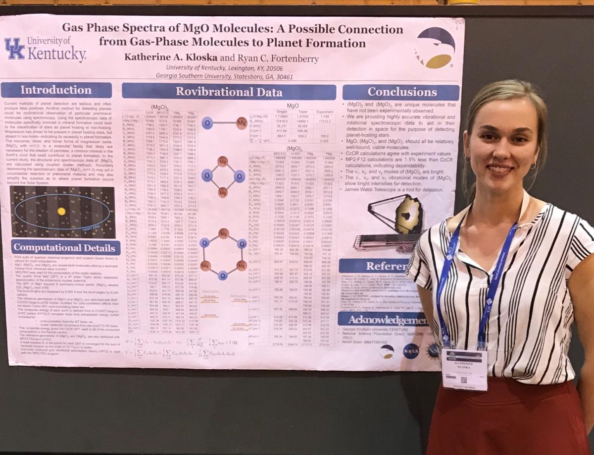
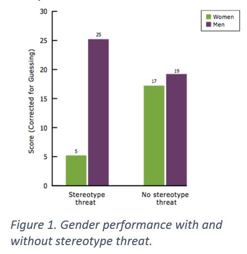

This Will Definitely Be a Great Presentation
Submitted by Katie Kloska on Mon, 03/19/2018 - 11:25pm

This week I attended the national ACS (American Chemical Society) meeting in New Orleans. I attended seminars about physical chemistry developments and the graduate school process. In addition, I presented my poster titled, “Gas Phase Spectra of MgO Molecules: A Possible Connection from Gas-Phase Molecules to Planet Formation”—a project that I completed at Georgia Southern University this summer during their NSF REU.
I have always considered presenting to be one of my stronger skills. I grew up as a performer, so I am confident standing in front people and speaking. Throughout high school I was often able to quickly throw together presentations and effectively deliver them. Gaining more experience speaking at conferences, I have started to notice a trend in my own behavior and tone as different audience members stop by to hear my spiel. My attitude can quickly change from serious to excited to fearful all within a 20 minute interchange of 3 audience members. Most of the time, my mannerisms will reflect the mannerisms of the person I am presenting to. Other times, my professionalism and speaking skills will simply fail when somebody I admire comes to hear me talk.
A woman approached my poster and began with the question “What does gas spectroscopy have to do with planet formation?” Initially hearing this question, I thought it would be an easy question to answer because my project proposes that spectroscopy can be used as a planet-detection method. I assumed she was very knowledgeable on the subject and I started to panic. The first 20 seconds of this presentation consisted of me sloppily starting sentences and then restarting them. “Spectroscopy…spectroscopy can be used to detect planets… well do you want to know… hmm… let’s start from the beginning.” I ended up giving her my stock speech because I couldn’t figure out how to form an answer to her initial question without background on the topic. At the end of my talk, she seemed unimpressed. She stared at my poster and started pointing at data oh no. She pointed out 2 small typos on the poster and started to ask me what they meant and how I acquired the data that they represented. To a less intimidating audience member, I could have easily taken a breath and realized that I had just wrongly capitalized the omega symbol that is used to symbolize harmonic wavenumbers. However, I was thoroughly intimidated, so I stayed silent for a few seconds and replied with “I’ll have to look at that.” She continued to ask me more questions that I was not prepared to answer and it ended with a whirlwind of stress and disappointment.
After we shook hands and she walked away from my poster, I realized that (after presenting the project at two separate conferences) she was the first woman to ever approach this specific poster. Although I completely butchered our interaction, I was happy to be able to share my research with her. In my head, I have built up women in science so much that I now view versed women in physical chemistry as triumphant crusaders who have blazed a trail for my colleagues and myself. In another way, they intimidate me because I know how hard they have worked. While I could have reviewed my poster a few more times to avoid this flub, I partly attribute my poor delivery on how she was able to intimidate me simply by being a woman in science.
Although it’s a small sentiment, I hope that my subconscious continues to hold these women on a pedestal. Hopefully, as time passes I will become less intimidated and I will be able to learn more from them when they visit my posters at conferences.
Camaraderie
Submitted by Katie Kloska on Thu, 03/01/2018 - 9:18pm
A recent discovery that I have made is that my major, chemistry, is comprised of 48% women at the University of Kentucky (UK Analytics). This actually comes as a surprise to me; I thought the percentages were much more skewed. I guess it just takes a quick data check to confirm that I am in fact ~not alone~. This misconception led me to do another quick data check of chemistry graduate school demographics. According to the American Chemical Society, women make up 27.4% of all chemistry graduate programs—that’s quite a drop. Why are women less likely to continue their studies in graduate school?
This month, I have been focusing on the camaraderie that is necessary for personal interest and encouragement in STEM. A STEM course load is not easy. As I have transitioned from introductory chemistry courses to upper-undergraduate and graduate chemistry courses, I have discovered that they only get harder. I am noticing now that I make jokes more frequently on how college has “humbled” me and that achieving B’s can enormous feats sometimes (I recently mentioned this to a professor and they responded with, “...but you should actually go for A’s...”). Without a relatable group of people, these jokes and woes will go unheard. In addition, it can be hard to understand that you aren’t the only one who struggles in school.
Now, camaraderie comes in. After doing poorly on an exam or not quite understanding what was just taught in class, it is always nice to talk about it with another student. However, it can be difficult for me to publicly express my hardships in school. This difficulty depends less on my personal ego than it does on my contribution to the general impression of women in chemistry. If I have a question in a male-dominated class, like differential equations (where the ratio is about 6:1 male to female), I will not ask it because I fear that my question will imply that women taking differential equations can’t keep up.
Without asking questions in class, I must base most of my education on textbooks and the trusted words of scientific acquaintances. By associating myself with a group of like-minded individuals, the role of being a student becomes much easier. “Katie, what you are describing is just friendship.” This description of camaraderie spans a bit further than friendship, however. As women gain more traction in science, camaraderie means that we will support each other through the hard classes, the graduate school applications, and the occasional sexism in group projects. Reaching out to the kid we sit next to in class but have never talked to and organizing study groups are effective ways to enforce camaraderie.
On campus at the University of Kentucky, there are many clubs and academic fraternities that reinforce this type of camaraderie. Of course, #IAmAWomanInSTEM is a great initiative that allows women to collaborate and discuss their college experience. Monthly meetings allow STEM women across campus to support each other in their scientific endeavors. In addition, UK has a large selection of academic fraternities and clubs like STEMcats and Feminist Alliance that encourage these types of relationships. By being open with each other and working together to learn, hopefully women will feel more encouraged to continue their studies in STEM.
Being in STEM
Submitted by by Mayte Hernandez-Murillo on Tue, 02/06/2018 - 12:33pm

Growing up I never really understood what it meant to be a woman in STEM. I had male teachers in all my science classes except for my AP chemistry teacher. She was my first female mentor and encouraged me to pursue chemistry. Girls success in interest in science and math depends on the effects of societal beliefs and the learning environment.1 Since none of my male teachers had ever encouraged me to peruse science, I never thought that could be a possibility.
That first impression of chemistry with my AP chemistry teacher gave me a push forward into science and I became a biochemistry major here at the University of Kentucky. With the class size being over 100 people it didn’t seem like there was a problem. As I moved to higher level chemistry classes the number of female chemists disappeared. Male first year college student are more likely to say that they are STEM majors, but by graduation only 20% of the female graduating class ends up earning a STEM degree.1 This is when the imposter syndrome first hit me. I had to take general physics along with all the engineers. Since my lab partners were male and experienced with the programs used in class, they would often take over the experiment and not let me participate. Their engineering fraternity provided them with a network of people they could access questions, tutoring, and other resources. Since I was not part of support group in the sciences, I felt like I was alone. How is it that I’ve made it two years through my college education and yet I feel like I didn’t deserve to be there? Imposter syndrome is the feeling that you aren’t qualified for the work and having the anxiety that one day you will be found out as a fraud. I did not internalize accomplishments and I felt like I was competing for second best because I knew first place would go to the male in the class.
My lack of confidence was inhibiting the way I performed in class. If answers didn’t come to me as easy as the males in my class, I would find myself questioning myself because I did not fall into the stereotype of male in a white lab coat. I was a victim of the “stereotype threat.” Even women who are strongly associated with their STEM field are susceptible to its effects. This phenomenon is the fear of doing something that would confirm that stereotype. In a study done in 1999 at Michigan state university, 30 females and 24 males were split into two groups. One group was told men performed better than women on the test, this was the “threat condition”. As a result, the female students in this group performed significantly worse. Gender performance with & without stereotype threat. This test proved that if the stereotype threat was removed then women would perform just as well as the men. The stereotyped individuals in this group often made more of an effort and this was evident in my studies. I was reading, practicing problems, talking to professors, and still it felt like I was coming up short. I needed to simply make myself aware of this stereotype. To overcome the need to feel accepted by the scientific world when in fact I just need to associate myself with chemistry and I could be the one in the white lab coat.
I did not believe the stereotype that girls and women were not as good as men and boys. Subconsciously, however, according to Harvard’s implicit association test (IAT), I did. This test measures the association between math-arts and male-female. These less-conscious beliefs underlying negative stereotypes continue to influence not only my behavior but everyone’s around me too. Since the establishment of this test in 1998, there has been a 70% association of male with science and female with the arts. This proves that a bias against women in STEM fields is not a thing of the past. It’s not that girls say that they cannot do math, it’s that they cannot identify with it. This crucial difference reveals that when girls and women cannot identify themselves with a particular path. Once I started associating with chemistry and math, I found myself doing better in my classes.
I will be graduating in May and now I fear that the implicit bias will follow me to the workplace. Women in “masculine fields” such as STEM typically ranked less competent than their equally qualified male counterpart. This ranking was not the same in “female” or gender neutral careers. In a conducted study by Heilman, it was reported that a successful woman in a male career are more likely to be disliked as well if they did not exemplify the classic character traits such as caring, understanding, and concerned about others. There is a struggle to keep a balance between competent and being likeable. My experiences with Dr. Sylvia Cerel-Suhl have showed me how she has overcome these obstacles and become a strong representation of the woman in the STEM field. She is a local physician with lots of networked and has opened up several opportunities for me. Figure 2. Dr. Sylvia Cerel-Suhl demonstrating how to make a heart for the American Heart Association Kids Art 4 Heart program. She has shown me that stereotypes have not set boundaries on her but have she pushed her to dig into new fields of research. Her love for teaching kids inspired her to work with origami and different age groups. It’s inspiring seeing how she is very confident and can engage any audience. Her origami was recently put into a study to show how working memory could be improved.
This semester I will be working with a cognitive training platform that claims to increase general cognitive function that usually declines in late-life. The previously reported cognitive interventions were reading aloud and practice origami showed successful working memory manipulation and its correlation with frontal alpha power as detected by EEG. I hypothesized that the reading aloud and origami intervention would improve alpha power in order to improve working memory. I will be working with Dr. Yang Jiang and I think she and Dr. Cerel-Suhl will continue to help me overcome my challenges and continue to be a strong woman in STEM.
CONNECT WITH US